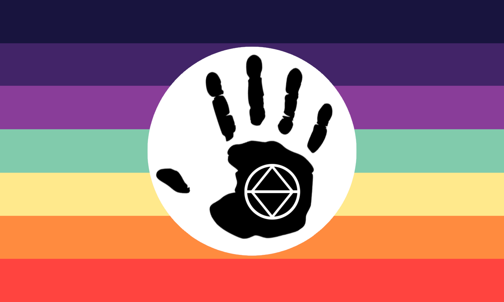

La majorité des alterhumains sont therians, ce qui veux dire qu'ils s'identifient à un animal vivant ou ayant vécu.
 Sans doute LE fandom avec lequel nous sommes le plus confondu, et pourtant les deux n'ont rien à voir !
En effet, l'alterhumanité est une identité serieuse dont la majorité est therian (= qui s'identifie a un animal vivant ou ayant vécu en plus de son humanité);
Tandis que le furry fandom bien que peu aimé est simplement une branche du cosplay, consistant à aimer
se représenter sous forme d'un animal anthropomorphique (= animal à silhouette humaine)
Donc non ! Un quadrobist n'est pas furry OwO
Malgré toutes les vidéos informatives trouvables sur le sujet, ce sport est souvent confondu avec la theriantropie et les gears (le port de masque, de queues, de gants-pattes, de tatouages, de colliers etc)
le sont également. Pourtant, il est possible d'être quadrobist et de porter des gears
sans pour autant être alterhumain!
ㅤ
Restez connectés pour la suite meheheh :3 Mon compte youtube à mwa : https://www.youtube.com/@random_dog_therian